1. Diagrama de casos de uso
Es el diagrama UML de casos de uso: el rectángulo es el sistema y cada óvalo es un caso de uso (CU-01 a CU-19). A la izquierda y abajo a la derecha están los seis roles que usan el sistema; a la derecha, los cinco actores externos. No lleva números agregados: se explica con sus propios códigos CU.
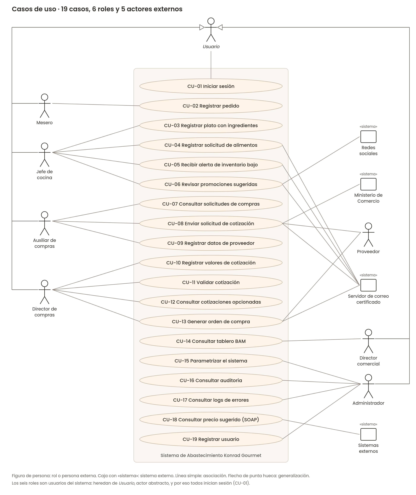
Los actores y los 19 casos de uso
| Elemento | Qué es |
|---|---|
| Usuario (abstracto) | Actor en cursiva. Los seis roles heredan de él (flecha de punta hueca, generalización), por eso todos inician sesión (CU-01) sin dibujar seis líneas. |
| Mesero | CU-02 Registrar pedido (V02 a V04). |
| Jefe de cocina | CU-03 Registrar plato con ingredientes (V06), CU-04 Registrar solicitud de alimentos (V08 a V10), CU-05 Recibir alerta de inventario bajo (V05, V07) y CU-06 Revisar promociones sugeridas. |
| Auxiliar de compras | CU-07 Consultar solicitudes (V11, V12), CU-08 Enviar solicitud de cotización (V13 a V15) y CU-09 Registrar datos de proveedor (Proveedores). |
| Director de compras | CU-10 Registrar valores (V18), CU-11 Validar cotización (V16, V17, V19), CU-12 Consultar opcionadas (V20) y CU-13 Generar orden de compra (V21 a V23). |
| Director comercial | CU-14 Consultar tablero BAM. |
| Administrador | CU-15 Parametrizar el sistema, CU-16 Consultar auditoría, CU-17 Consultar logs de errores y CU-19 Registrar usuario. |
| Proveedor | Recibe el PDF de la cotización (CU-08) y de la orden (CU-13); responde por correo, fuera del sistema. |
| Ministerio de Comercio | Da el precio estándar por producto (CU-08). |
| Servidor de correo certificado | Entrega los correos con certificado y sello de tiempo (CU-04, CU-05, CU-06, CU-08 y CU-13). |
| Redes sociales | Dan las señales de tendencia para las promociones (CU-06). |
| Sistemas externos | Consumen el servicio SOAP del restaurante: CU-18 Consultar precio sugerido. |
🎤 Guion sugerido para sustentarlo en vivo
Antes de la arquitectura, mostramos quién usa el sistema. Son seis roles: mesero, jefe de cocina, auxiliar de compras, director de compras, director comercial y administrador. Todos heredan de un actor abstracto, Usuario, y por eso todos inician sesión con el mismo caso de uso, el CU-01.
Los 19 casos de uso cubren las 19 historias de usuario. El flujo principal es el de abastecimiento: el jefe de cocina pide alimentos, el auxiliar envía la solicitud de cotización al proveedor con el precio del Ministerio, y el director de compras valida y genera la orden. Alrededor están el pedido del mesero, la alerta de inventario, el tablero BAM y las funciones del administrador.
A la derecha están los actores externos: el proveedor, el Ministerio de Comercio, el servidor de correo certificado, las redes sociales y los sistemas externos que consumen nuestro servicio SOAP, que es el CU-18.
Si preguntan…
- ¿Por qué Usuario es abstracto?
- Porque nadie es solo «usuario»: siempre tiene un rol. La generalización evita repetir la asociación con CU-01 seis veces, y coincide con la clase Usuario «abstract» de la página 4a.
- ¿Por qué CU-18 no tiene ventana?
- Porque lo usa otro sistema, no una persona: es el servicio SOAP que exige el requisito de integración.
2. Nivel 1 del C4 · Diagrama de contexto
Es el primer nivel del modelo C4: el sistema completo es una sola caja azul, y alrededor están las personas que lo usan y los sistemas externos con los que se integra. Cada flecha dice para qué se usa, qué ventanas intervienen y con qué protocolo.
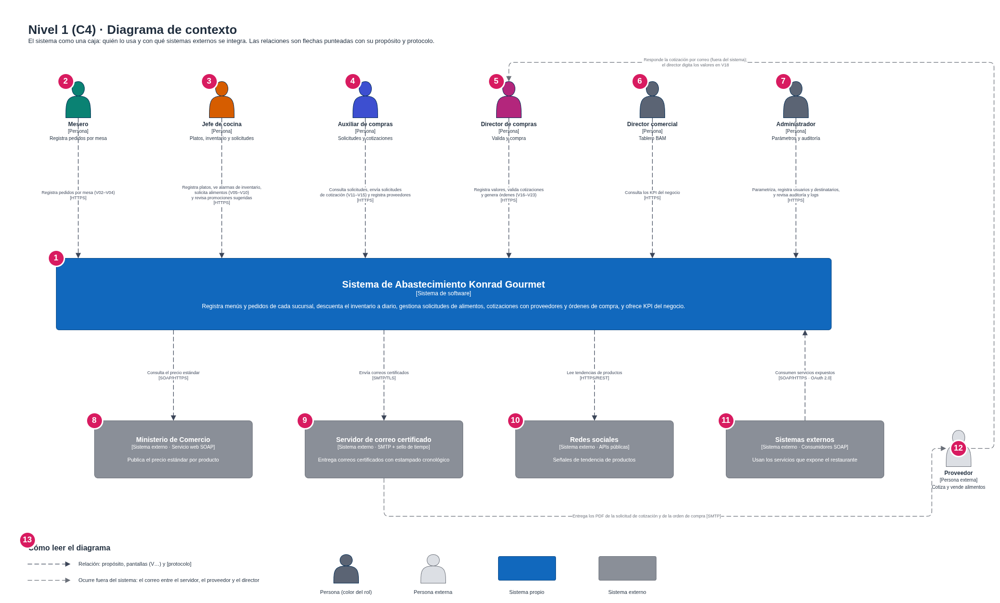
Qué es cada parte
| # | Elemento | Qué es |
|---|---|---|
| Sistema de Abastecimiento Konrad Gourmet | El sistema que construimos, visto desde afuera. Registra menús y pedidos, descuenta el inventario cada día, gestiona solicitudes, cotizaciones y órdenes de compra y da los KPI del negocio. | |
| Mesero | Registra pedidos por mesa (V02 a V04) por HTTPS. Cada rol tiene su color, que se repite en todas las páginas. | |
| Jefe de cocina | Registra platos, ve las alarmas de inventario, pide alimentos y revisa las promociones sugeridas (V05 a V10). | |
| Auxiliar de compras | Consulta solicitudes, envía solicitudes de cotización y registra proveedores (V11 a V15). | |
| Director de compras | Registra los valores del proveedor, valida cotizaciones y genera órdenes (V16 a V23). | |
| Director comercial | Consulta los KPI del negocio en el tablero BAM. | |
| Administrador | Parametriza el sistema, registra usuarios y destinatarios y revisa la auditoría y los logs. | |
| Ministerio de Comercio | Sistema externo con un servicio web SOAP que publica el precio estándar de cada producto. Lo consultamos por SOAP/HTTPS. | |
| Servidor de correo certificado | Entrega los correos con certificado y estampado cronológico (SMTP/TLS). Por aquí salen los PDF al proveedor. | |
| Redes sociales | APIs públicas que dan señales de tendencia de productos para las promociones (HTTPS/REST). | |
| Sistemas externos | Otros sistemas que consumen los servicios que expone el restaurante; la flecha va hacia el sistema (SOAP/HTTPS con OAuth 2.0). | |
| Proveedor | Persona externa (gris claro). Recibe por correo el PDF de la cotización y de la orden, y responde por correo, fuera del sistema; por eso el director digita sus valores en V18. | |
| Cómo leer el diagrama | Flecha punteada oscura: relación con propósito, ventanas y protocolo. Flecha punteada gris: lo que ocurre fuera del sistema (el correo entre el servidor, el proveedor y el director). |
🎤 Guion sugerido para sustentarlo en vivo
Empezamos por el nivel 1 del C4, el contexto. Aquí el sistema es una sola caja: el Sistema de Abastecimiento Konrad Gourmet. Arriba están las seis personas que lo usan, cada una con su color, que se mantiene en todos los diagramas. Cada flecha dice qué hace esa persona, en qué ventanas y por qué protocolo: todas por HTTPS.
Abajo están los cuatro sistemas externos. Del Ministerio de Comercio tomamos el precio estándar por SOAP; el servidor de correo certificado entrega los correos con sello de tiempo; las redes sociales nos dan tendencias para las promociones, y otros sistemas consumen nuestros servicios SOAP.
El proveedor es una persona externa: no entra al sistema. Recibe el PDF por correo y responde por correo; por eso el director de compras digita sus valores en la ventana 18. Esa decisión está en los supuestos del reporte.
Si preguntan…
- ¿Por qué el proveedor no usa el sistema?
- Es el supuesto S2 del reporte: el proveedor responde por correo y el director digita los valores. Evita dar acceso a terceros y mantiene el correo certificado como respaldo legal.
3. Nivel 2 del C4 · Diagrama de contenedores
Abre la caja del nivel 1 y muestra las aplicaciones y los almacenes de datos que la forman: la SPA, el servidor web, el API Gateway, el Service Registry, los once microservicios con su base de datos, el broker de eventos, Redis, el almacén de objetos y los logs. Cada flecha lleva su propósito y su protocolo.

Qué es cada parte
| # | Elemento | Qué es |
|---|---|---|
| Límite del sistema | Todo lo que está dentro del recuadro punteado es nuestro; lo de afuera son personas y sistemas externos. | |
| Las seis personas | Los mismos seis roles del nivel 1, con su color. Todos usan la SPA por HTTPS. | |
| Proveedor | Responde por correo, fuera del sistema; el director digita los valores en V18. | |
| Servidor web (Nginx) | Entrega los archivos estáticos de la SPA, detrás de una CDN con WAF. | |
| SPA Konrad Gourmet | React + TypeScript, se ejecuta en el navegador y es responsive (web y móvil). El menú lateral de cada rol llega en el JWT. | |
| API Gateway «Facade» | Spring Cloud Gateway: punto único de entrada. Valida el JWT, limita la tasa y enruta por prefijo (13 prefijos para los 11 servicios). | |
| Service Registry (Eureka) | Directorio vivo de instancias: cada servicio se registra y late cada 30 s; el gateway le pregunta a qué instancia sana enviar cada petición. Dos réplicas. | |
| Logs de error (Elasticsearch) | Reúne los logs de error de los 11 servicios (RNF de mantenimiento); los consulta el administrador desde ms-administracion. | |
| Los once microservicios | Spring Boot 3 con Java 21 en Kubernetes: once contenedores sin estado, uno por subdominio, cada uno dueño de su base. Por dentro son hexagonales (páginas 4a a 4e). | |
| Un microservicio con su base | Ejemplo: ms-cotizaciones con su BD cotizaciones [PostgreSQL]. Ningún servicio lee la base de otro: se comunican por REST o por eventos. | |
| Almacén de objetos [S3] | Guarda los PDF de cotizaciones y órdenes y las imágenes de los platos. Kafka no lleva archivos: el evento lleva solo la dirección del PDF (claim check). | |
| ms-integracion | La frontera SOA: consume el servicio web SOAP del Ministerio y expone nuestros servicios SOAP en /api/integracion/**. | |
| Redis | Tres usos: la caché de precios del Ministerio (Proxy), el canal pub/sub de las alarmas en vivo y los baldes del límite de tasa del gateway. | |
| BD integración | PostgreSQL de ms-integracion, con su tabla outbox para publicar eventos de forma confiable. | |
| Broker de eventos (Kafka) | Tres brokers, factor de réplica 3, retención 7 días, los 10 tópicos y la cola de errores notificaciones.dlq. Coreografía publicar/suscribir, entrega al menos una vez y consumidores idempotentes. | |
| Sistemas externos | Consumen nuestro servicio SOAP a través del gateway. | |
| Ministerio de Comercio | Servicio web SOAP con el precio estándar; solo ms-integracion habla con él. | |
| Servidor de correo certificado | ms-notificaciones le envía los correos por SMTP con sello de tiempo. | |
| Redes sociales | ms-analitica lee las tendencias por HTTPS. | |
| Cómo leer el diagrama | Flecha continua: llamada síncrona (REST, SOAP, SMTP o WebSocket). Punteada ámbar: evento hacia o desde Kafka. Gris: acceso a datos y registro en Eureka. | |
| Qué se simplificó | Las rutas del gateway van como una sola flecha; el balanceador, las réplicas y las zonas están en la página 5; el interior de cada servicio, en las páginas 4a a 4e. |
🎤 Guion sugerido para sustentarlo en vivo
En el nivel 2 abrimos la caja. Las personas usan la SPA, hecha en React y TypeScript, que entrega un servidor Nginx. Toda petición de la SPA pasa por el API Gateway, que es una fachada: valida el token JWT, limita la tasa de peticiones y enruta por prefijo al servicio que corresponde. Para saber qué instancia está viva, le pregunta al Service Registry, Eureka.
En el centro están los once microservicios, uno por subdominio: identidad, pedidos, menú, inventario, solicitudes, cotizaciones, órdenes, notificaciones, administración, analítica e integración. Cada uno tiene su propia base PostgreSQL y ninguno lee la base de otro.
Abajo está Kafka, el broker de eventos, con los diez tópicos. Así se comunican los servicios cuando no hace falta esperar una respuesta: por ejemplo, cuando se registra un pedido, inventario y analítica se enteran por el evento pedido.registrado.
A los lados están los apoyos: Redis para la caché de precios, las alarmas y el límite de tasa; el almacén de objetos para los PDF y las imágenes, y Elasticsearch para los logs de error. ms-integracion es la única puerta al Ministerio por SOAP, y también expone nuestro servicio SOAP a otros sistemas.
Si preguntan…
- ¿Por qué una base por servicio?
- Para que cada servicio se despliegue, escale y falle por separado. El costo es la consistencia eventual, que se maneja con eventos, la outbox y consumidores idempotentes.
- ¿Por qué Kafka y no solo REST?
- Porque muchas reacciones no deben bloquear al usuario (correo, KPI, descuento de inventario). Con eventos, el que publica no conoce a los que consumen y un servicio caído no detiene a los demás.
4. Mapa integrado de las tres arquitecturas
Es la vista que integra las tres arquitecturas en una sola página: microservicios (la estructura), orientada a eventos (cómo se comunican los roles) y hexagonal (el interior de cada servicio). Se lee de arriba abajo: personas, ventanas de la SPA, entrada (balanceador, gateway y registro), los once servicios, Kafka y, a la derecha, los sistemas externos. Es la página más grande: conviene acercarse con los botones.
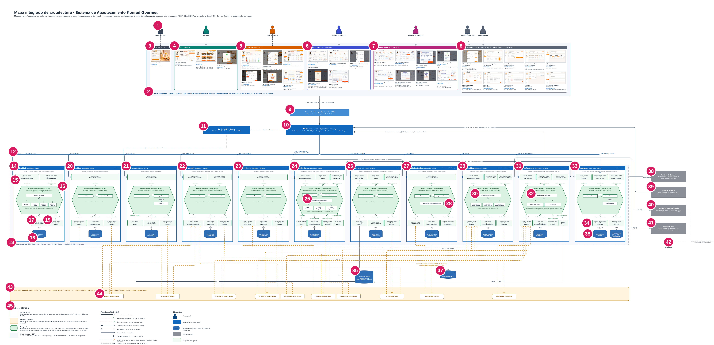
Qué es cada parte
| # | Elemento | Qué es |
|---|---|---|
| Personas | Una por rol, con su color, sobre las ventanas que usa. | |
| SPA Konrad Gourmet | El contenedor cliente (React + TypeScript). Cada miniatura de ventana indica el servicio y el endpoint que la atiende. | |
| Acceso · V01 | Inicio de sesión para todos los roles: ms-identidad, POST /api/auth/token. | |
| Ventanas del mesero | V02 a V04: inicio, nuevo pedido y pedido registrado (PED-0251), con ms-pedidos. | |
| Ventanas del jefe de cocina | V05 a V10: inicio con alarmas, nuevo plato, inventario, nueva solicitud, solicitud registrada (SOL-031) y mis solicitudes. | |
| Ventanas del auxiliar de compras | V11 a V15: solicitudes, detalle, generar solicitud de cotización, cotización enviada y cotizaciones. | |
| Ventanas del director de compras | V16 a V23: pendientes, todas, registrar valores, validación, opcionadas, generar orden, orden generada (OC-0012) y órdenes de compra. | |
| Las otras diez ventanas | Editar y desactivar plato, promociones sugeridas, proveedores, reenviar cotización, tablero BAM, parámetros y tema, auditoría, logs de errores, usuarios y destinatarios de alertas, cada una con su rol, su servicio y sus rutas. Con las 23 del prototipo son 33. | |
| Balanceador de carga L7 | Activo-activo con TLS: reparte entre las réplicas del gateway y revisa su salud. | |
| API Gateway «Facade» | Punto único de entrada: valida el JWT, limita la tasa y enruta a la instancia sana que indica el registro. | |
| Service Registry (Eureka) | Directorio vivo de instancias; latido cada 30 s. | |
| Prefijos del gateway | Encima de cada servicio, las rutas que el gateway le envía: 13 prefijos para los 11 servicios (por ejemplo /api/pedidos/**). | |
| Plataforma de microservicios | Kubernetes en 3 zonas más un centro de datos alterno; una base de datos por servicio. | |
| Cómo se lee un servicio (ms-identidad) | Encabezado azul con el nombre, la tecnología y, a la derecha, las ventanas que atiende (V01). Debajo, una línea con su responsabilidad. | |
| Adaptadores de arriba | Cajas verde claro: los adaptadores de entrada (REST) y de salida síncrona (cifrado BCrypt, emisor del JWT). Conducen o usan el núcleo a través de puertos. | |
| Núcleo hexagonal | El hexágono verde: dominio y casos de uso, sin Spring, JPA ni Kafka. Dentro va la relación UML principal: aquí, la herencia de Usuario con un menú por rol. | |
| Persistencia | Adaptador JPA que implementa el puerto de repositorio y guarda en la base del servicio. | |
| Base del servicio | BD identidad [PostgreSQL]: cada servicio tiene la suya. | |
| Publicador de eventos | KafkaEventPublisher: escribe el evento en la outbox y un relé lo publica en Kafka. | |
| ms-pedidos | Pedidos por mesa (V02 a V04). Composición Pedido ◆ DetallePedido. Escala en horas pico; recibe el catálogo por menu.actualizado. | |
| ms-menu | Platos, recetas, categorías y productos (V06); guarda la imagen del plato en el almacén de objetos. | |
| ms-inventario | Existencias por sucursal, descuento diario (ConsumoDiarioJob, 23:59) y umbral del 25 %. Agregación Inventario ◇ InsumoInventario. | |
| ms-solicitudes | Solicitudes de alimentos y sus estados (V08 a V12): PENDIENTE, EN TRÁMITE, COMPLETADA. | |
| ms-cotizaciones | Solicitud de cotización, PDF, registro de valores, validación y proveedores (V13 a V20). | |
| Chain of Responsibility | Las tres reglas de validación: más de 25 % por encima, RECHAZADA; más de 50 % por debajo, SOSPECHOSA; el resto, OPCIONADA. | |
| ms-ordenes | Órdenes de compra desde cotizaciones OPCIONADAS y su PDF (V21 a V23); consulta la cotización por REST a ms-cotizaciones. | |
| ms-administracion | Parámetros e imagen corporativa, auditoría y logs. | |
| Singleton | ParametrosSistema: una sola fuente de parámetros por réplica (tema, logos). | |
| ms-analitica | Tablero BAM (KPI), tendencias y promociones sugeridas; lee las redes sociales. | |
| Strategy | CalculadorKpi con un cálculo intercambiable por KPI: producto y sucursal con mayor demanda y proveedor con mejores precios. | |
| ms-notificaciones | Correos certificados con sello de tiempo y la alarma en vivo de V05 (WebSocket). | |
| Factory Method + Decorator | Factory Method crea la notificación (correo o alarma); los decoradores agregan certificado y sello de tiempo al correo SMTP. | |
| ms-integracion | Frontera SOA: consume el SOAP del Ministerio y expone servicios SOAP; apoya V13 y V14. | |
| Proxy con caché | PrecioReferenciaCacheProxy: si el precio está en Redis, responde; si no, lo pide al Ministerio y lo guarda un día. | |
| Redis | Caché de precios compartida por las réplicas. | |
| Almacén de objetos [S3] | PDF e imágenes de platos; lo usan ms-menu, ms-cotizaciones, ms-ordenes y ms-notificaciones. | |
| Logs de error [Elasticsearch] | Los consulta ms-administracion. | |
| Ministerio de Comercio | Servicio web SOAP con el precio estándar. | |
| Sistemas externos | Consumen nuestro SOAP. | |
| Servidor de correo certificado | SMTP + TLS + sello de tiempo. | |
| Redes sociales | Señales de tendencia por HTTPS. | |
| Proveedor | Recibe los PDF por correo. | |
| Broker de eventos (Kafka) | La banda ámbar: coreografía publicar/suscribir, eventos inmutables, entrega al menos una vez, consumidores idempotentes y outbox transaccional. | |
| Los diez tópicos | Cada chip es un tópico. Las flechas punteadas ámbar bajan desde el publicador al tópico y suben del tópico a cada listener que lo consume. | |
| Leyenda | Cómo leer el mapa (las cuatro arquitecturas), las relaciones UML y C4 y los elementos. Es la misma notación de la tabla 7 del reporte. |
🎤 Guion sugerido para sustentarlo en vivo
Esta página junta las tres arquitecturas en una sola vista y se lee de arriba abajo. Arriba están las personas y, debajo, la SPA con sus ventanas agrupadas por rol: las 23 del prototipo y las otras diez, como proveedores, el tablero BAM y las del administrador. Cada miniatura dice qué servicio y qué endpoint la atiende, así que desde una ventana se llega directo a su servicio.
Las peticiones bajan por HTTPS al balanceador y al API Gateway, que valida el token, limita la tasa y enruta con ayuda de Eureka. Encima de cada servicio están sus prefijos: son 13 para los 11 servicios.
La fila central es la arquitectura de microservicios, y cada caja muestra la hexagonal por dentro. Tomemos ms-identidad: arriba, los adaptadores de entrada, como el controlador REST; en el centro, el hexágono con el dominio y los casos de uso, que no conoce Spring ni Kafka; abajo, la persistencia con su propia base y el publicador de eventos. Todos los servicios siguen la misma forma, y dentro de cada hexágono está el patrón principal: la cadena de reglas en cotizaciones, el Singleton en administración, Strategy en analítica y Factory Method con Decorator en notificaciones.
Abajo, la banda ámbar es la arquitectura orientada a eventos: Kafka con sus diez tópicos. Las flechas punteadas bajan del servicio que publica al tópico y suben a los que consumen. A la derecha está la frontera SOA: ms-integracion habla SOAP con el Ministerio, con un Proxy que guarda los precios en Redis.
Si preguntan…
- ¿Dónde está cada arquitectura en el mapa?
- Microservicios: la fila de cajas azules. Eventos: la banda ámbar con los tópicos. Hexagonal: el hexágono verde y los adaptadores de cada servicio. Cliente-servidor y SOA: la SPA con el gateway y ms-integracion con el Ministerio.
- ¿Por qué el gateway es una fachada?
- Porque esconde los once servicios detrás de un solo punto de entrada: la SPA solo conoce el gateway, que además concentra la validación del token y el límite de tasa.
5. Nivel 3 del C4 · Componentes de ms-cotizaciones
Hace zoom sobre un solo contenedor, ms-cotizaciones, y muestra sus componentes: los controladores, el núcleo hexagonal (casos de uso, fachada, reglas y modelo) y los adaptadores hacia la base, el almacén de objetos, Kafka y ms-integracion. Se eligió este servicio porque atiende el flujo de compra de V13 a V20 y concentra tres patrones: Facade, Chain of Responsibility y Adapter.
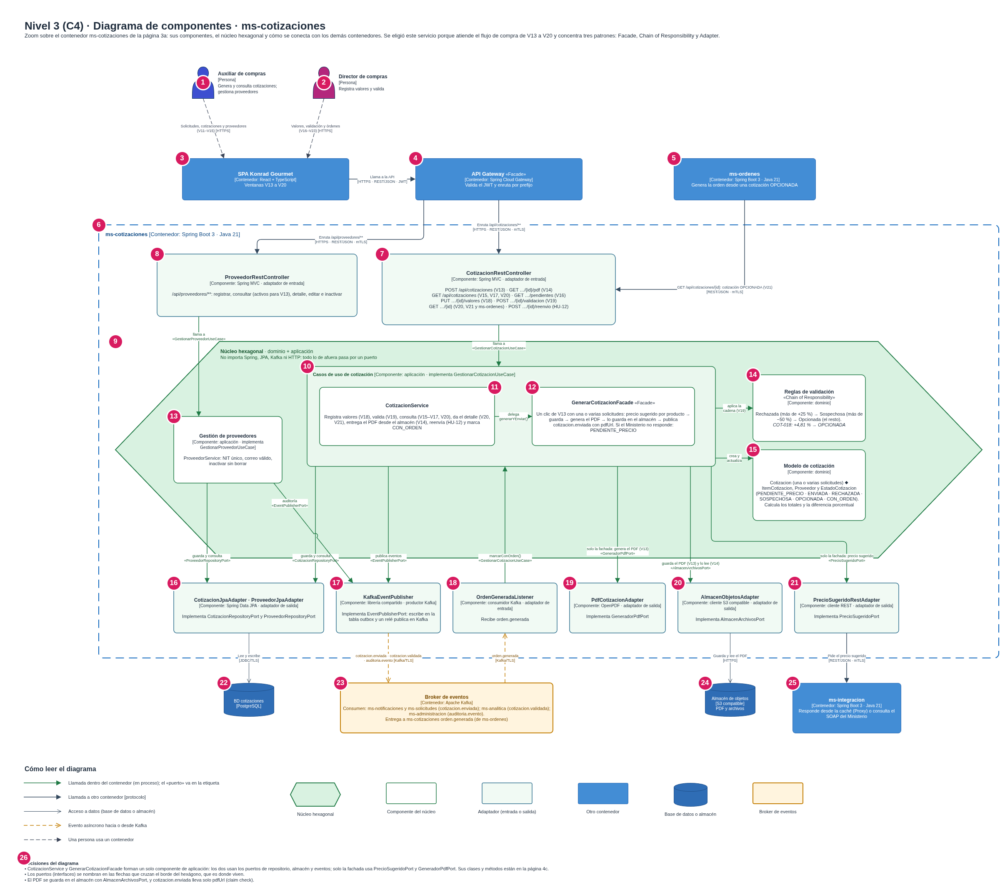
Qué es cada parte
| # | Elemento | Qué es |
|---|---|---|
| Auxiliar de compras | Genera y consulta cotizaciones y gestiona proveedores. | |
| Director de compras | Registra los valores del proveedor y valida. | |
| SPA | Las ventanas V13 a V20 que usan este servicio. | |
| API Gateway | Valida el JWT y enruta por prefijo (/api/cotizaciones/** y /api/proveedores/**). | |
| ms-ordenes | Otro contenedor: lee la cotización OPCIONADA por REST para generar la orden. | |
| Límite de ms-cotizaciones | Todo lo de adentro es un solo contenedor desplegable. | |
| CotizacionRestController | Adaptador de entrada (Spring MVC). Cada endpoint dice qué ventana atiende: POST /api/cotizaciones (V13), valores (V18), validación (V19), reenvío (HU-12)… | |
| ProveedorRestController | Adaptador de entrada de /api/proveedores/**: registrar, consultar, editar e inactivar. | |
| Núcleo hexagonal | Dominio y aplicación. No importa Spring, JPA, Kafka ni HTTP: todo lo de afuera entra y sale por un puerto. | |
| Casos de uso de cotización | El componente de aplicación que implementa GestionarCotizacionUseCase. | |
| CotizacionService | Registra valores, valida, consulta, entrega el PDF desde el almacén, reenvía y marca CON_ORDEN. | |
| GenerarCotizacionFacade «Facade» | Un clic de V13 coordina todo: precio sugerido por producto, guardar, generar el PDF, subirlo al almacén y publicar cotizacion.enviada. Si el Ministerio no responde, la deja PENDIENTE_PRECIO. | |
| Gestión de proveedores | ProveedorService: NIT único, correo válido, inactivar sin borrar. | |
| Reglas de validación «Chain of Responsibility» | Rechazada (más de +25 %) → Sospechosa (más de −50 %) → Opcionada (el resto). COT-018: +4,81 %, OPCIONADA. | |
| Modelo de cotización | Cotizacion ◆ ItemCotizacion, Proveedor y EstadoCotizacion. Calcula totales y la diferencia porcentual. | |
| Adaptadores JPA | Implementan los puertos de repositorio de cotizaciones y proveedores. | |
| KafkaEventPublisher | De la librería compartido: escribe el evento en la tabla outbox y un relé lo publica en Kafka. | |
| OrdenGeneradaListener | Adaptador de entrada que recibe orden.generada y pasa la cotización a CON_ORDEN. | |
| PdfCotizacionAdapter | Genera el PDF con OpenPDF (puerto GeneradorPdfPort). | |
| AlmacenObjetosAdapter | Guarda el PDF en el almacén S3 (puerto AlmacenArchivosPort). | |
| PrecioSugeridoRestAdapter | Cliente REST hacia ms-integracion (puerto PrecioSugeridoPort). | |
| BD cotizaciones | Su base PostgreSQL. | |
| Broker de eventos | Quién consume lo que publica este servicio: notificaciones y solicitudes (cotizacion.enviada), analítica (cotizacion.validada) y administración (auditoria.evento). | |
| Almacén de objetos | Donde queda el PDF; el evento solo lleva su dirección (claim check). | |
| ms-integracion | Responde el precio desde la caché (Proxy) o consulta el SOAP del Ministerio. | |
| Decisiones del diagrama | Servicio y fachada forman un componente; los puertos se nombran en las flechas que cruzan el hexágono; el PDF viaja como claim check. |
🎤 Guion sugerido para sustentarlo en vivo
En el nivel 3 entramos a un contenedor. Escogimos ms-cotizaciones porque atiende la parte central del flujo de compra, de la ventana 13 a la 20, y porque reúne tres patrones.
Las peticiones entran por dos controladores REST, uno de cotizaciones y otro de proveedores. Esos controladores son adaptadores de entrada: no tienen lógica, llaman a un puerto del núcleo. El núcleo hexagonal, en verde, no conoce Spring, JPA, Kafka ni HTTP.
Dentro está la fachada GenerarCotizacionFacade: con un solo clic del auxiliar pide el precio sugerido de cada producto a ms-integracion, guarda la cotización, genera el PDF, lo sube al almacén y publica cotizacion.enviada. Si el Ministerio no responde, la cotización no se pierde: queda pendiente de precio y se puede reenviar.
Cuando el director valida, actúa la cadena de reglas: primero se pregunta si está más de 25 % por encima, luego si está más de 50 % por debajo y, si no, queda opcionada. Con COT-018 la diferencia es +4,81 %, así que queda opcionada. Abajo están los adaptadores de salida, cada uno detrás de su puerto: la base, el PDF, el almacén, el cliente REST de precios y el publicador de eventos con la outbox.
Si preguntan…
- ¿Por qué una fachada y no el controlador haciendo todo?
- Porque generar una cotización coordina cinco cosas (precio, repositorio, PDF, almacén y evento); la fachada las ordena en un lugar y el controlador hace una sola llamada.
- ¿Qué pasa si el Ministerio no responde?
- La fachada guarda la cotización como PENDIENTE_PRECIO, deja el error en el log y avisa; luego se reenvía desde Cotizaciones (HU-12).
6. Nivel 4 · Código · compartido e identidad
Las páginas 4a a 4e son el nivel 4 del C4: diagramas de clases UML generados del mismo modelo que el código Java (paquetes co.edu.konradlorenz.…). En total son 195 clases. Los métodos marcados ‹Vxx› atienden esa ventana, y en magenta va el patrón de diseño de cada clase. Cada paquete se lee igual: arriba los adaptadores de entrada, luego el puerto de entrada (UseCase) y el servicio de aplicación, en el centro el dominio y abajo los puertos de salida con sus adaptadores. Esta página tiene la librería compartido, que usan todos los servicios, y ms-identidad.
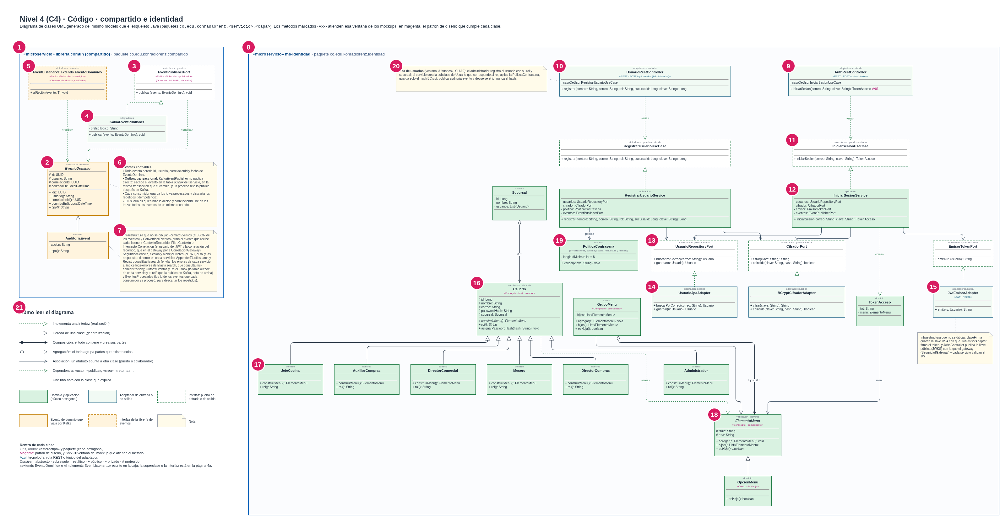
Qué es cada parte
| # | Elemento | Qué es |
|---|---|---|
| Librería compartido | Código común a los once servicios: la base de los eventos y cómo se publican y consumen. | |
| EventoDominio «abstract» | Todo evento hereda id, usuario, correlacionId y fecha. El usuario es quien hizo la acción; la correlación une los eventos de un mismo recorrido. | |
| EventPublisherPort | El puerto de salida para publicar (Publish-Subscribe): el núcleo publica sin saber que existe Kafka. | |
| KafkaEventPublisher | El adaptador que implementa ese puerto con Kafka. | |
| EventListener | La interfaz de los suscriptores (listeners). | |
| Eventos confiables | Outbox transaccional: el evento se guarda en la tabla outbox en la misma transacción que el cambio y un relé lo publica después. Cada consumidor guarda los id procesados y descarta los repetidos. | |
| Infraestructura que no se dibuja | Las clases técnicas que no son del diseño: formato JSON de los eventos, contexto del usuario y la correlación, seguridad del JWT, envío de errores a Elasticsearch, la outbox, el relé y los eventos procesados. | |
| ms-identidad | Inicio de sesión, usuarios, roles y menú por rol. | |
| AuthRestController | Adaptador de entrada: POST /api/auth/token (V01). | |
| UsuarioRestController | Adaptador de entrada: POST /api/usuarios, el alta de usuarios del administrador (CU-19). | |
| IniciarSesionUseCase | Puerto de entrada: lo que el controlador puede pedirle al núcleo. | |
| IniciarSesionService | Servicio de aplicación: busca el usuario, verifica la clave, arma el menú y emite el token. | |
| Puertos de salida | UsuarioRepositoryPort, CifradorPort y EmisorTokenPort: lo que el núcleo necesita de afuera. | |
| Adaptadores de salida | UsuarioJpaAdapter (base), BCryptCifradorAdapter (hash de la clave) y JwtEmisorAdapter: la línea punteada con triángulo hueco es «implementa». | |
| JwtEmisorAdapter «RS256» | Firma el JWT con una llave RSA; el gateway y cada servicio validan con la llave pública. | |
| Usuario «abstract» · Factory Method | Cada rol implementa construirMenu(): la subclase decide qué menú crear. | |
| Los seis roles | Mesero, JefeCocina, AuxiliarCompras, DirectorCompras, DirectorComercial y Administrador heredan de Usuario. | |
| ElementoMenu · Composite | El menú lateral es un árbol: GrupoMenu (compuesto) contiene OpcionMenu (hoja). La SPA solo recorre el árbol. | |
| PoliticaContrasena | La regla de contraseña del alta de usuarios (8 o más caracteres, mayúscula…). | |
| Alta de usuarios | Crea la subclase según el rol, aplica la política, guarda solo el hash BCrypt y publica auditoria.evento. | |
| Cómo leer el diagrama | La leyenda de las páginas de clases: realización (implementa), herencia, composición ◆, agregación ◇, asociación y dependencia; verde oscuro, dominio y aplicación; verde claro, adaptadores; ámbar, eventos. Debajo, «Dentro de cada clase»: gris arriba el estereotipo y la capa, magenta el patrón y ‹Vxx› la ventana. |
🎤 Guion sugerido para sustentarlo en vivo
En el nivel 4 vemos las clases. Esta primera página tiene dos paquetes. A la izquierda, la librería compartido: todos los eventos heredan de EventoDominio, que lleva el id, el usuario, la correlación y la fecha. El núcleo publica a través de un puerto, EventPublisherPort, y el adaptador de Kafka lo implementa. Además usamos outbox transaccional: el evento se guarda en la misma transacción que el cambio y un relé lo publica, así no se pierde aunque Kafka falle en ese momento.
A la derecha está ms-identidad, que muestra bien la hexagonal: el controlador REST de la V01 llama al puerto IniciarSesionUseCase; el servicio usa tres puertos de salida, el repositorio, el cifrador y el emisor del token, y cada uno tiene su adaptador: JPA, BCrypt y JWT firmado con RS256.
Aquí hay dos patrones. Factory Method: Usuario es abstracto y cada rol construye su propio menú. Y Composite: ese menú es un árbol de grupos y opciones, que viaja en el token y la SPA solo lo recorre. Por eso agregar un rol no obliga a cambiar la SPA.
7. Nivel 4 · Código · pedidos, menú e inventario
Las páginas 4a a 4e son el nivel 4 del C4: diagramas de clases UML generados del mismo modelo que el código Java (paquetes co.edu.konradlorenz.…). En total son 195 clases. Los métodos marcados ‹Vxx› atienden esa ventana, y en magenta va el patrón de diseño de cada clase. Cada paquete se lee igual: arriba los adaptadores de entrada, luego el puerto de entrada (UseCase) y el servicio de aplicación, en el centro el dominio y abajo los puertos de salida con sus adaptadores. Esta página tiene ms-pedidos, ms-menu y ms-inventario: lo que pasa desde el plato hasta el descuento de inventario.
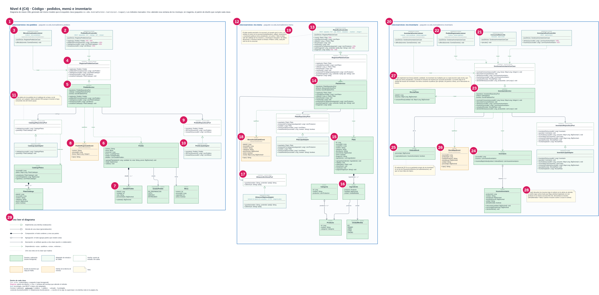
Qué es cada parte
| # | Elemento | Qué es |
|---|---|---|
| ms-pedidos | Pedidos por mesa (V02 a V04). | |
| PedidoRestController | Adaptador de entrada de /api/pedidos. | |
| MenuActualizadoListener | Recibe menu.actualizado y actualiza la copia local del catálogo de platos. | |
| RegistrarPedidoUseCase | Puerto de entrada: registrar un pedido y consultar los del turno. | |
| PedidoService | Valida el pedido contra el catálogo, lo guarda y publica pedido.registrado. | |
| Pedido | Número, mesa y mesero; compone sus líneas (◆). | |
| DetallePedido | Plato y cantidad: no existe sin su pedido (composición). | |
| PedidoRegistradoEvent | El evento con las líneas del pedido; extiende EventoDominio. | |
| PedidoRepositoryPort | Puerto de salida de persistencia. | |
| PedidoJpaAdapter | Lo implementa con JPA. | |
| Catálogo en la base | Cada réplica lee el catálogo de su base, no de memoria: cualquier réplica atiende V03. | |
| ms-menu | Platos, recetas, categorías y productos (V06). | |
| PlatoRestController | Adaptador de entrada de /api/platos. | |
| PlatoService | Registra, edita, desactiva y reactiva platos y publica menu.actualizado. | |
| Plato | Con su sucursal, su creador y su receta. | |
| Ingrediente | Producto, cantidad y unidad de la receta. | |
| AlmacenArchivosPort | Puerto para guardar la imagen del plato; lo implementa AlmacenObjetosAdapter (S3). | |
| MenuActualizadoEvent | Avisa a pedidos, inventario y analítica que cambió un plato. | |
| Reglas del plato | Nombre único en la sucursal; editar, desactivar y reactivar publican menu.actualizado. | |
| ms-inventario | Existencias por sucursal, descuento diario y umbral del 25 % (V05, V07). | |
| ConsumoDiarioJob «Scheduler» | La tarea de las 23:59: descuenta el consumo del día. | |
| PedidoRegistradoListener | Acumula el consumo de cada pedido con la receta local. | |
| InventarioService | Descuenta, evalúa el umbral y publica inventario.stock-bajo. | |
| Inventario ◇ InsumoInventario | Agregación: el inventario agrupa insumos que existen por sí solos. | |
| UmbralStock | El 25 % es una regla propia de inventario, no un parámetro global. | |
| StockBajoEvent | Lo publica la noche en que un insumo cruza el umbral. | |
| Recetas locales | pedido.registrado trae plato y cantidad; inventario los multiplica por su copia de la receta, que recibió por menu.actualizado. | |
| La alerta | Sigue activa hasta que llega solicitud.registrada con ese producto (HU-16). | |
| Cómo leer el diagrama | La leyenda de las páginas de clases: realización (implementa), herencia, composición ◆, agregación ◇, asociación y dependencia; verde oscuro, dominio y aplicación; verde claro, adaptadores; ámbar, eventos. Debajo, «Dentro de cada clase»: gris arriba el estereotipo y la capa, magenta el patrón y ‹Vxx› la ventana. |
🎤 Guion sugerido para sustentarlo en vivo
Esta página muestra cómo un plato termina descontando inventario sin que los servicios se llamen entre sí. En ms-menu, el jefe registra el plato con su receta; el servicio publica menu.actualizado.
ms-pedidos escucha ese evento y guarda su copia del catálogo; así el mesero arma el pedido sin preguntarle a ms-menu. El pedido compone sus líneas, se guarda y se publica pedido.registrado.
ms-inventario escucha ese evento y acumula el consumo con su copia de la receta. A las 23:59, la tarea diaria descuenta lo consumido y, si un insumo queda por debajo del 25 %, publica inventario.stock-bajo, que se convierte en la alarma en vivo y el correo al jefe. Las relaciones UML que se ven son la composición de Pedido con sus líneas y la agregación de Inventario con sus insumos.
8. Nivel 4 · Código · solicitudes y cotizaciones
Las páginas 4a a 4e son el nivel 4 del C4: diagramas de clases UML generados del mismo modelo que el código Java (paquetes co.edu.konradlorenz.…). En total son 195 clases. Los métodos marcados ‹Vxx› atienden esa ventana, y en magenta va el patrón de diseño de cada clase. Cada paquete se lee igual: arriba los adaptadores de entrada, luego el puerto de entrada (UseCase) y el servicio de aplicación, en el centro el dominio y abajo los puertos de salida con sus adaptadores. Esta página tiene ms-solicitudes y ms-cotizaciones, con Facade y Chain of Responsibility.
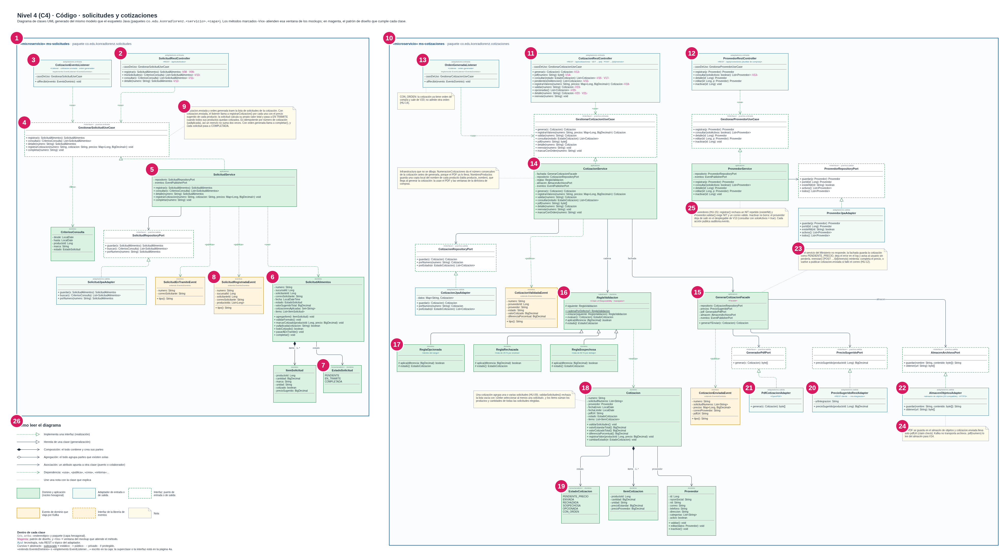
Qué es cada parte
| # | Elemento | Qué es |
|---|---|---|
| ms-solicitudes | Solicitudes de alimentos (V08 a V12). | |
| SolicitudRestController | Adaptador de entrada de /api/solicitudes. | |
| CotizacionEventsListener | Escucha cotizacion.enviada y orden.generada para mover el estado de la solicitud. | |
| GestionarSolicitudUseCase | Puerto de entrada: registrar, consultar con filtros y registrar cotizaciones. | |
| SolicitudService | Aplica las reglas y publica solicitud.registrada y solicitud.en-tramite. | |
| SolicitudAlimentos ◆ ItemSolicitud | La solicitud compone sus ítems (producto y cantidad). | |
| EstadoSolicitud | PENDIENTE → EN TRÁMITE → COMPLETADA. | |
| Eventos de la solicitud | SolicitudRegistradaEvent y SolicitudEnTramiteEvent extienden EventoDominio. | |
| Idempotencia por cotización | La solicitud pasa a EN TRÁMITE cuando todos sus productos quedan cotizados; un reenvío no suma dos veces. | |
| ms-cotizaciones | Cotizaciones, PDF, validación y proveedores (V13 a V20). | |
| CotizacionRestController | Adaptador de entrada de /api/cotizaciones. | |
| ProveedorRestController | Adaptador de entrada de /api/proveedores (HU-15). | |
| OrdenGeneradaListener | Recibe orden.generada y marca la cotización CON_ORDEN. | |
| CotizacionService | Registra valores, valida, consulta y reenvía. | |
| GenerarCotizacionFacade «Facade» | Coordina precio, repositorio, PDF, almacén y evento en un solo clic. | |
| ReglaValidacion «abstract» · Chain of Responsibility | Cada regla decide o pasa a la siguiente. | |
| Las tres reglas | ReglaRechazada (más de 25 % por encima), ReglaSospechosa (más de 50 % por debajo) y ReglaOpcionada (el resto); heredan de ReglaValidacion. | |
| Cotizacion ◆ ItemCotizacion | Agrupa una o varias solicitudes, con su proveedor y su estado. | |
| EstadoCotizacion | PENDIENTE_PRECIO, ENVIADA, RECHAZADA, SOSPECHOSA, OPCIONADA y CON_ORDEN. | |
| PrecioSugeridoRestAdapter | Cliente REST hacia ms-integracion. | |
| PdfCotizacionAdapter | Genera el PDF con OpenPDF. | |
| AlmacenObjetosAdapter | Guarda el PDF en el almacén S3. | |
| Si el Ministerio no responde | La cotización queda PENDIENTE_PRECIO y se reenvía luego (HU-12). | |
| Claim check | Kafka no transporta archivos: cotizacion.enviada lleva solo pdfUrl. | |
| Proveedores | NIT único, correo válido, inactivar sin borrar; cada acción se audita. | |
| Cómo leer el diagrama | La leyenda de las páginas de clases: realización (implementa), herencia, composición ◆, agregación ◇, asociación y dependencia; verde oscuro, dominio y aplicación; verde claro, adaptadores; ámbar, eventos. Debajo, «Dentro de cada clase»: gris arriba el estereotipo y la capa, magenta el patrón y ‹Vxx› la ventana. |
🎤 Guion sugerido para sustentarlo en vivo
Aquí está el corazón del flujo de compra. A la izquierda, ms-solicitudes: el jefe registra la solicitud, que compone sus ítems y empieza PENDIENTE. El jefe no la cambia de estado: lo hace un evento. Cuando llega cotizacion.enviada, la solicitud pasa a EN TRÁMITE, y con orden.generada, a COMPLETADA.
A la derecha, ms-cotizaciones. La fachada coordina la generación de la cotización, y la validación usa una cadena de responsabilidad: ReglaValidacion es abstracta y sus tres reglas se evalúan en orden. Agregar una regla no toca las otras, y el orden se arma en un solo lugar.
Dos decisiones que vale la pena mencionar: el PDF no viaja por Kafka, el evento lleva solo su dirección en el almacén, que es el patrón claim check; y si el Ministerio no responde, la cotización queda pendiente de precio y se reenvía después.
9. Nivel 4 · Código · órdenes y notificaciones
Las páginas 4a a 4e son el nivel 4 del C4: diagramas de clases UML generados del mismo modelo que el código Java (paquetes co.edu.konradlorenz.…). En total son 195 clases. Los métodos marcados ‹Vxx› atienden esa ventana, y en magenta va el patrón de diseño de cada clase. Cada paquete se lee igual: arriba los adaptadores de entrada, luego el puerto de entrada (UseCase) y el servicio de aplicación, en el centro el dominio y abajo los puertos de salida con sus adaptadores. Esta página tiene ms-ordenes y ms-notificaciones, con Factory Method y Decorator.
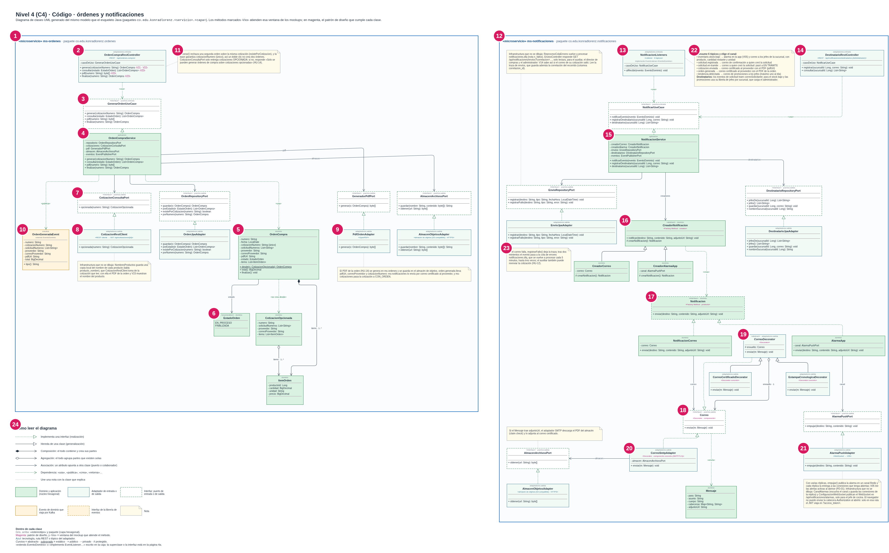
Qué es cada parte
| # | Elemento | Qué es |
|---|---|---|
| ms-ordenes | Órdenes de compra (V21 a V23). | |
| OrdenCompraRestController | Adaptador de entrada de /api/ordenes-compra, incluido «Marcar como recibida» (PATCH …/finalizar). | |
| GenerarOrdenUseCase | Puerto de entrada: generar, consultar y finalizar. | |
| OrdenCompraService | Genera la orden desde la cotización, su PDF y publica orden.generada. | |
| OrdenCompra ◆ ItemOrden | La orden compone sus ítems. | |
| EstadoOrden | EN_PROCESO y FINALIZADA. | |
| CotizacionConsultaPort | Puerto para leer la cotización: solo entrega cotizaciones OPCIONADAS. | |
| CotizacionRestClient | Lo implementa con REST hacia ms-cotizaciones (síncrono: el director espera el número). | |
| PdfOrdenAdapter | Genera el PDF de la orden con OpenPDF; se guarda en el almacén. | |
| OrdenGeneradaEvent | Lleva pdfUrl, correo del proveedor y número de cotización. | |
| Una sola orden por cotización | Se rechaza la segunda orden y la base garantiza número de cotización único: un doble clic no crea dos órdenes. | |
| ms-notificaciones | Correos certificados y la alarma en vivo. | |
| NotificacionListeners | Escuchan seis tópicos y eligen el canal. | |
| DestinatarioRestController | Destinatarios de alertas que carga el administrador. | |
| NotificacionService | Arma el mensaje y lo envía por el canal que corresponda. | |
| CreadorNotificacion «abstract» · Factory Method | CreadorCorreo y CreadorAlarmaApp deciden qué notificación crear. | |
| Notificacion | El producto del Factory Method: NotificacionCorreo o AlarmaApp. | |
| Correo · Decorator (componente) | La interfaz que decoran el certificado y el sello de tiempo. | |
| CorreoDecorator | CorreoCertificadoDecorator y EstampaCronologicaDecorator envuelven el correo sin cambiar el envío SMTP. | |
| CorreoSmtpAdapter | El componente concreto que habla SMTP con TLS; adjunta el PDF del almacén. | |
| AlarmaPushAdapter | Empuja la alarma a V05 por WebSocket, a través de un canal Redis para que llegue a cualquier réplica. | |
| Los seis tópicos que consume | stock-bajo (alarma y correo), solicitud.registrada, solicitud.en-tramite, cotizacion.enviada, orden.generada y tendencia.detectada. | |
| Si el correo falla | Deja la traza, reintenta dos veces y pasa el evento a notificaciones.dlq, que se reprocesa cada 5 minutos, hasta tres veces. | |
| Cómo leer el diagrama | La leyenda de las páginas de clases: realización (implementa), herencia, composición ◆, agregación ◇, asociación y dependencia; verde oscuro, dominio y aplicación; verde claro, adaptadores; ámbar, eventos. Debajo, «Dentro de cada clase»: gris arriba el estereotipo y la capa, magenta el patrón y ‹Vxx› la ventana. |
🎤 Guion sugerido para sustentarlo en vivo
En ms-ordenes, el director genera la orden sobre una cotización opcionada. Aquí la llamada a ms-cotizaciones es síncrona, por REST, porque el director espera el número de la orden. Una regla y una restricción de la base impiden dos órdenes sobre la misma cotización. Después, todo lo demás pasa por el evento orden.generada.
ms-notificaciones escucha seis tópicos y decide el canal. Usa dos patrones: Factory Method, porque un creador abstracto delega en el creador de correo o en el de alarma qué notificación construir; y Decorator, porque el certificado y el sello de tiempo se agregan envolviendo el correo SMTP, sin tocar el código que lo envía.
Si el correo falla, no se pierde: queda la traza, se reintenta y pasa a una cola de errores que el servicio vuelve a procesar.
10. Nivel 4 · Código · integración, administración y analítica
Las páginas 4a a 4e son el nivel 4 del C4: diagramas de clases UML generados del mismo modelo que el código Java (paquetes co.edu.konradlorenz.…). En total son 195 clases. Los métodos marcados ‹Vxx› atienden esa ventana, y en magenta va el patrón de diseño de cada clase. Cada paquete se lee igual: arriba los adaptadores de entrada, luego el puerto de entrada (UseCase) y el servicio de aplicación, en el centro el dominio y abajo los puertos de salida con sus adaptadores. Esta página tiene ms-integracion (Proxy y Adapter), ms-administracion (Singleton) y ms-analitica (Strategy).
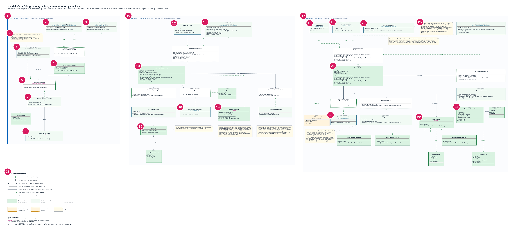
Qué es cada parte
| # | Elemento | Qué es |
|---|---|---|
| ms-integracion | La frontera SOA. | |
| AbastecimientoSoapEndpoint | Adaptador de entrada SOAP: el servicio que exponemos a sistemas externos (CU-18). | |
| PrecioRestController | REST interno que usa ms-cotizaciones; no sale por el gateway. | |
| ConsultarPrecioService | Pide el precio al puerto PrecioReferenciaPort. | |
| PrecioReferenciaPort | Puerto que implementan el Proxy y el Adapter. | |
| PrecioReferenciaCacheProxy «Proxy» | Responde desde Redis si el precio tiene menos de un día; si no, pregunta al real. | |
| MinisterioComercioAdapter «Adapter» | Traduce el SOAP del Ministerio al puerto del núcleo. | |
| MinisterioSoapClient «Adaptee» | El cliente SOAP generado del servicio del Ministerio. | |
| La caché es compartida | Vive en Redis, así la comparten todas las réplicas. | |
| ms-administracion | Parámetros, auditoría y logs. | |
| AdminRestController | Adaptador de entrada de /api/admin. | |
| AuditoriaListener | Recibe auditoria.evento de los otros diez servicios. | |
| AdministracionService | Parametriza y consulta auditoría y logs. | |
| ParametrosSistema «Singleton» | Una instancia por réplica con el tema y los logos; se refresca de la base cada minuto. | |
| Bitacora ◇ RegistroAuditoria | Agregación: la bitácora agrupa los registros de auditoría. | |
| ElasticsearchLogsAdapter | Lee los logs de error del índice de Elasticsearch. | |
| ms-analitica | Tablero BAM y promociones. | |
| NegocioEventsListener | Escucha cinco tópicos y guarda hechos en su almacén analítico. | |
| TendenciasJob «Scheduler» | Análisis semanal de tendencias para las promociones. | |
| TableroRestController | GET /api/bam/kpis para el tablero BAM. | |
| TableroService | Recorre la lista de estrategias de KPI. | |
| CalculadorKpi «Strategy» | ProductoMayorDemanda, SucursalMayorDemanda y ProveedorMejoresPrecios: un KPI nuevo es una clase nueva. | |
| RedesSocialesAdapter | Lee tendencias de las redes sociales por HTTPS. | |
| SugerenciaPromocion | Producto, motivo y vigencia; el jefe la acepta o la descarta. | |
| Cómo se filtran los KPI | Por rango de fechas y sucursal (HU-18); sin rango, demanda de 30 días y proveedor de 365. | |
| Cómo leer el diagrama | La leyenda de las páginas de clases: realización (implementa), herencia, composición ◆, agregación ◇, asociación y dependencia; verde oscuro, dominio y aplicación; verde claro, adaptadores; ámbar, eventos. Debajo, «Dentro de cada clase»: gris arriba el estereotipo y la capa, magenta el patrón y ‹Vxx› la ventana. |
🎤 Guion sugerido para sustentarlo en vivo
La última página de clases tiene tres servicios. En ms-integracion están Proxy y Adapter juntos: el servicio pide el precio a un puerto; delante está el Proxy, que responde desde la caché en Redis, y detrás el Adapter, que traduce el SOAP del Ministerio. Así no llamamos al Ministerio por cada producto de cada cotización. El mismo servicio expone nuestro endpoint SOAP a otros sistemas.
En ms-administracion está el Singleton: ParametrosSistema guarda el tema y los logos, y la SPA los aplica al iniciar sesión. Aquí también llega la auditoría de cada operación de los otros diez servicios, por eventos.
En ms-analitica está Strategy: cada KPI del tablero es una clase que implementa CalculadorKpi. Los datos no se consultan en las bases de otros servicios; llegan por eventos a un almacén propio.
11. Diagrama dinámico · Recorrido completo de una compra
Es el diagrama dinámico del C4, en forma de secuencia: cómo fluye una compra desde que el jefe pide alimentos (V08) hasta que el director hace seguimiento a la orden (V23). Arriba y abajo están los mismos contenedores de la página 3a; cada paso lleva su número a la izquierda, que es el de la tabla 9 del reporte, y x.y numera los mensajes dentro de un paso. No lleva números agregados: se explica con los suyos. Datos de ejemplo: SOL-031, COT-018 y OC-0012.
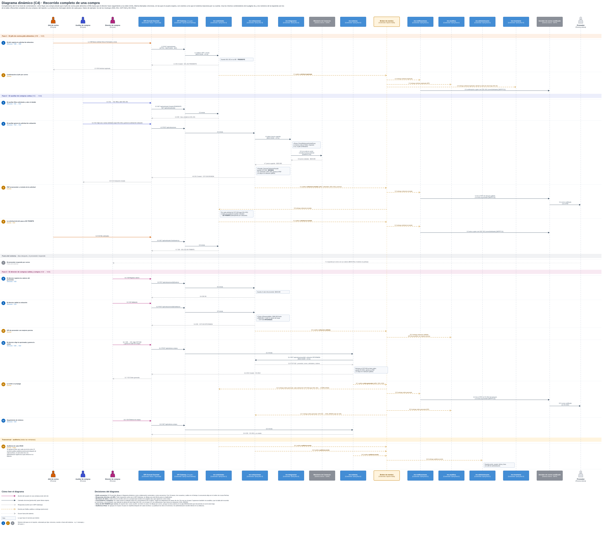
Los 14 pasos (números del propio diagrama)
| Elemento | Qué es |
|---|---|
| 1 · V08 → V09 · síncrono | El jefe registra la solicitud: POST /api/solicitudes, responde 201 SOL-031 PENDIENTE. |
| 2 · evento | solicitud.registrada: correo de confirmación (ms-notificaciones), KPI (ms-analitica) y alerta de stock atendida (ms-inventario). |
| 3 · V11 → V12 · síncrono | El auxiliar filtra las solicitudes y abre el detalle. |
| 4 · V13 → V14 · síncrono | El auxiliar genera la solicitud de cotización: precio del Ministerio (Proxy, luego SOAP), PDF al almacén, COT-018 ENVIADA (Facade). |
| 5 · evento | cotizacion.enviada: PDF por correo al proveedor y revisión de la solicitud. |
| 6 · evento · V10 | solicitud.en-tramite: la solicitud del jefe pasa a EN TRÁMITE y se le avisa. |
| 7 · fuera del sistema | Días después, el proveedor responde por correo. |
| 8 · V18 · síncrono | El director registra los valores del proveedor: $545.000. |
| 9 · V19 · síncrono | El director valida: $545.000 frente a $520.000 = +4,81 %, OPCIONADA (Chain of Responsibility). |
| 10 · evento | cotizacion.validada hacia ms-analitica: KPI de proveedor con mejores precios. |
| 11 · V20 → V22 · síncrono | El director genera la orden: ms-ordenes consulta la cotización por REST y responde 201 OC-0012. |
| 12 · evento | orden.generada: solicitud COMPLETADA, cotización CON ORDEN, PDF al proveedor y KPI. |
| 13 · V23 · síncrono | Seguimiento de las órdenes. |
| 14 · evento · todas | auditoria.evento: cada uno de los otros diez servicios publica la auditoría de cada escritura hacia ms-administracion. |
🎤 Guion sugerido para sustentarlo en vivo
Este diagrama muestra en el tiempo lo que las otras páginas muestran en el espacio: el recorrido completo de una compra. Los números de la izquierda son los mismos de la tabla 9 del reporte, y el color dice si el paso es síncrono, un evento o algo que pasa fuera del sistema.
El jefe registra la solicitud SOL-031 y recibe la respuesta de inmediato; el correo de confirmación y la atención de la alerta de stock llegan después, por evento. El auxiliar genera la cotización COT-018 con un clic: el precio sale del Ministerio a través del Proxy, se genera el PDF y se envía al proveedor por evento, y la solicitud pasa a EN TRÁMITE sin que nadie la toque.
El proveedor responde por correo, fuera del sistema. El director registra $545.000, valida y la cadena de reglas da +4,81 %, opcionada. Genera la orden OC-0012, y con orden.generada la solicitud queda completada, la cotización con orden y el proveedor recibe el PDF. En todo momento, cada escritura deja su auditoría.
La idea que muestra el diagrama: el usuario solo espera lo que necesita ver de inmediato; todo lo demás lo hace el sistema por eventos.
12. Diagrama de despliegue
Complemento del C4: cómo se ejecuta la arquitectura para cumplir 200.000 usuarios concurrentes, 1.000 TPS y una disponibilidad del 99,7 % (unas 26,3 horas de caída al año como máximo), con recuperación ante desastres en un centro de datos alterno.
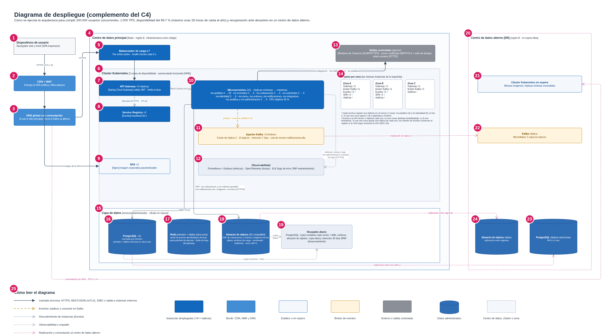
Qué es cada parte
| # | Elemento | Qué es |
|---|---|---|
| Dispositivos de usuario | Navegador web y móvil con la SPA responsive. | |
| CDN + WAF | Entrega la SPA estática cerca del usuario y filtra ataques. | |
| DNS global con conmutación | Si cae el sitio principal, envía el tráfico al alterno. | |
| Centro de datos principal | Región A, en la nube, con infraestructura como código. | |
| Balanceador de carga L7 | Par activo-activo, revisa la salud cada 5 s. | |
| Clúster Kubernetes | Tres zonas de disponibilidad y autoescalado horizontal (HPA) al 65 % de CPU. | |
| API Gateway ×3 | Valida el JWT y limita la tasa; uno por zona. | |
| Service Registry ×2 | Eureka, con latido de 30 s. | |
| SPA ×2 | Nginx con la imagen corporativa parametrizable. | |
| Los once microservicios | Réplicas mínimas y máximas: ms-pedidos 4 → 20, ms-identidad 3 → 8, inventario, cotizaciones y solicitudes 2 → 6, los demás 2 → 4. | |
| Kafka ×3 brokers | Factor de réplica 3, 10 tópicos, retención 7 días y cola de errores. | |
| Observabilidad | Prometheus y Grafana (métricas), OpenTelemetry (trazas) y ELK (logs de error). | |
| Salida controlada | Única salida hacia el Ministerio (SOAP), el correo certificado (SMTP/TLS) y las redes sociales. | |
| Reparto por zona | Un gateway y un broker por zona; cada servicio en al menos dos zonas. Si cae una zona, siguen dos de tres. | |
| Capa de datos | Servicios administrados con cifrado en reposo. | |
| PostgreSQL ×11 | Una base por servicio, primario y réplica síncrona en otra zona. | |
| Redis primario + réplica | Caché de precios, canal de alarmas y límite de tasa. | |
| Almacén de objetos | PDF e imágenes, versionado y multizona; previsto para crecer 200 %. | |
| Respaldo diario | Copia completa cada noche más WAL continuo; almacén con copia diaria; retención de 30 días. | |
| Centro de datos alterno | Región B en espera tibia. | |
| Clúster en espera | Las mismas imágenes con réplicas mínimas encendidas. | |
| Kafka réplica | MirrorMaker 2 copia los tópicos. | |
| PostgreSQL réplicas asíncronas | Se pierden como máximo 5 minutos de datos (RPO). | |
| Almacén réplica | Replicación entre regiones. | |
| Cómo leer el diagrama | Las líneas magenta son la replicación y la conmutación al centro alterno. |
🎤 Guion sugerido para sustentarlo en vivo
El despliegue responde a los requisitos no funcionales: 200.000 usuarios, 1.000 transacciones por segundo y 99,7 % de disponibilidad, que son unas 26 horas de caída al año. La idea es que ninguna pieza sea única.
El usuario llega por un DNS global con conmutación y una CDN con WAF. En el centro principal, un balanceador activo-activo reparte entre tres gateways, uno por zona, dentro de un clúster Kubernetes en tres zonas. Cada servicio tiene réplicas mínimas y máximas: pedidos, que es el de más carga, va de 4 a 20. Si se cae una zona, siguen dos de tres gateways y dos de tres brokers de Kafka.
Los datos están replicados: cada PostgreSQL con réplica síncrona en otra zona, Redis con réplica, y el almacén de objetos multizona, con respaldo diario y 30 días de retención. A la derecha, el centro de datos alterno, en otra región, recibe las réplicas y está listo para tomar el tráfico: perdemos como máximo cinco minutos de datos y recuperamos el servicio en una hora.
Si preguntan…
- ¿Cómo se llega al 99,7 %?
- Con redundancia en cada capa (DNS, CDN, balanceador, tres gateways, tres zonas, réplicas de datos) y un centro alterno; ningún componente es punto único de falla.
Konrad Gourmet · Sistema de Abastecimiento · Arquitectura de Software, Fundación Universitaria Konrad Lorenz, 2026-2